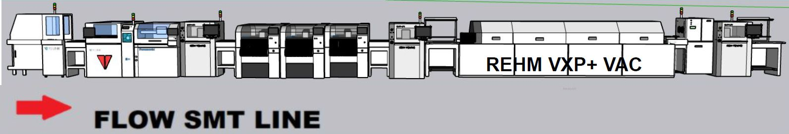

Engineering & IT Manager | Specialist in Process Engineering & Lean Six Sigma
Presentation
Engineering professional with 12 years in the Automotive Industry, combining expertise in project management,
process optimization, and technical leadership. Experienced as IT Manager and former Purchasing Manager,
skilled in driving results through strategic thinking, problem‑solving, and collaboration.
Currently pursuing Lean Six Sigma Black Belt certification (expected November 2025).
Work History
Engineering & IT Manager - Mexico Jinyoung Techno (January 2020 - Present)
Responsible for plant-wide engineering processes, including APQP, PPAP development, process validation, and new project design.
Led ERP (Plex) implementation, achieving $150K USD in cost savings. Experienced in process
improvements using Lean Six Sigma, technical purchasing, and project management.
Managed IT and Purchasing departments, with expertise in automotive manufacturing, injection molding, assemblies, and home audio products.
Production Chief - Hitachi Automotive Systems San Juan del Río (March 2017 - January 2020)
Led production for two SMT and final assembly lines manufacturing automotive Engine Control Units (ECUs) for Nissan.
Managed output exceeding 100K units per month with a team of 120 direct workers in a Tier 1 automotive environment.
Production Chief - Electrónica Clarion (October 2012 - March 2017)
Managed PCBA assembly equipment for automotive exterior and interior lighting products.
Coordinated with suppliers and customers to resolve quality issues, source spare parts, and design new production lines for projects ranging from 100K to 1M units annually.
Certifications & Diplomas
Black Belt in Lean Six Sigma (In Progress, expected completion: November 2025)
Core Tools
APQP / PPAP
FMEA AIAG-VGA
IPC-A-610 & IPC7711/7721
Project Management and Agile Fundamentals
CTPAT
Click on the ribbon to see all certifications
Machinery / Equipment

Full SMT line for PCBAs, automotive industry.
PCBA laser marker for traceability.
Solder Paste Printer for SMT lines.
Solder Paste Inspection, to detect paste application defects.
Chip Mounter Machine, to place components in PCBAs.
Reflow oven (including vacuum or nitrogen).
X-ray machine for checking BGA components and selective soldering fill.
Stencil washer machine.
Several conveyors for handling PCBA movements.
Microscopes for PCBA rework and inspection.
Injection molding process, horizontal machines.
Injection molding process with insert, mostly terminals.
Resistance welding using electrodes.
Hydraulic machine for riveting.
Progressive Press machines for making terminals and plates.
Use of vision system to detect defects, OCR, and improve inspection, brand Cognex.
Conformal coating application machine for PCBAs, brand PVA.
In-circuit machine for testing PCBAs, brand Kyoritsu.
In-circuit machine for testing PCBAs, brand Hioki.
Heat staking machine for plastic riveting, brand Sonitek.
3D snapshot sensor for taking measurements, brand Keyence.
Image measuring system for dimensional inspection, brand Keyence.
Laser marker for parts, brand Keyence.
PLC programming equipment, brand Keyence.
Selective soldering machine for PCBA applications, brand Kioki.
PLC programming equipment, brand Crouzet.
Depaneling of PCBAs using routers, brand Janome.
Selective soldering machine for PCBA applications, brand Pillarhouse.
Robot soldering for PCBA applications, brand Japan Unix.


 Resistance welding using electrodes.
Resistance welding using electrodes.
 Use of vision system to detect defects, OCR, and improve inspection, brand Cognex.
Use of vision system to detect defects, OCR, and improve inspection, brand Cognex.
 In-circuit machine for testing PCBAs, brand Kyoritsu.
In-circuit machine for testing PCBAs, brand Kyoritsu.
 In-circuit machine for testing PCBAs, brand Hioki.
In-circuit machine for testing PCBAs, brand Hioki.
 3D snapshot sensor for taking measurements, brand Keyence.
3D snapshot sensor for taking measurements, brand Keyence.
 Image measuring system for dimensional inspection, brand Keyence.
Image measuring system for dimensional inspection, brand Keyence.
 Laser marker for parts, brand Keyence.
Laser marker for parts, brand Keyence.
 PLC programming equipment, brand Keyence.
PLC programming equipment, brand Keyence.
 Selective soldering machine for PCBA applications, brand Kioki.
Selective soldering machine for PCBA applications, brand Kioki.
 Depaneling of PCBAs using routers, brand Janome.
Depaneling of PCBAs using routers, brand Janome.
 Selective soldering machine for PCBA applications, brand Pillarhouse.
Selective soldering machine for PCBA applications, brand Pillarhouse.
 Robot soldering for PCBA applications, brand Japan Unix.
Robot soldering for PCBA applications, brand Japan Unix.